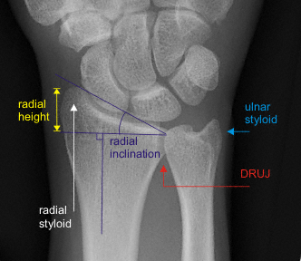
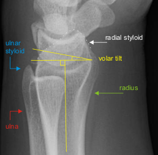

Imaging
Radiographs
- AP and lateral views of the wrist are standard examinations
- AP: assess shortening, ulnar styloid, lunate facet, articular impaction and the proximal carpal row
- Lateral: assess palmar tilt, metaphyseal comminution, articular impaction

Normal AP wrist

Normal lateral wrist
-
Normal alignment:
- Radial inclination: 23°
- Radial height: 12 mm
- Volar tilt: 11°
- Tilted lateral view: from a normal lateral position, elevate wrist 20° off film plate
- Neutralizes radial inclination and removes overlap of the radial styloid
- Allows better visualization of the articular surface, particularly the lunate facet
- CT: allows more accurate characterization of fragments, displacement and comminution